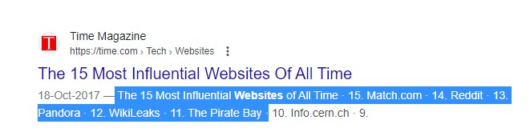
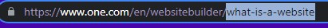

How to be a good HTML developer?
- Set a good title, to the point. (Just like I put it above)
-
Use meta to set description and content. If your look below then you
will get to know how does meta work. The selected sentence comes under
the 'content' attribute and is really useful to tell the search engines
about what your website contains and if it relevant for the user or not
according to the information they want.

--> <'meta name="description" content="Article about the SEO things!"
''>
-
Set a nice url. If someone shares the url, then the user should know
what content your website holds at the first glance. Below, the selected
sentence is an url slug, which tells us that the website is about what a
website is.

-
Use meta keywords. Keywords are the tags of youtube which help with the
viewership, just like that the search engine can find your website if
some keyword of the user search matches with yours, provided.
--> <'meta name="keywords" content="seo, computer, html, code, coding,
electronics"
-
Set meta author tag for telling the author name if in a blog website
-
Set a favicon (webpage icon) Look above, where meta tags are situated.
Use only images with extension '.ico'. Also, you in the above example of
favicon (link rel), you just need to enter the image name. Leave all
other fields as it is.
- Compress images and other resources
-
Remove unecessary html codes and CSS too (another language to use with
HTML)
- Add alt text to images in case of any loading error. This will also help blind people as there are various machines which read out the alt text than the image.
The End?
At last, we came to the end of the tutorial. Thanks for reading all this out and make sure you practice your web developing skills. Next tutorial will be about CSS, another language which is used to beautify the HTML documents like a pro and it is very easy language, easy to understand and easy to manage. So, keep practicing and keep learning. Thank you once again and have a nice day!